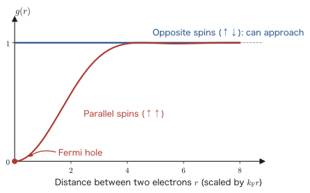
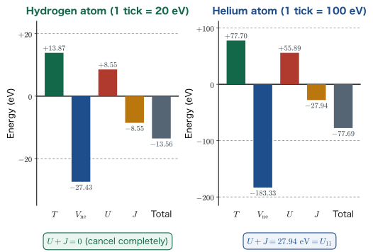

Chapter 9The Emergence of Exchange Energy — A Breakdown of the Total Energy
In Chapter 7 we learned that the wave function of a many-electron system must change sign when two electrons are interchanged, and that the simplest form satisfying this requirement is the Slater determinant. In Chapter 8 we established, through the Born–Oppenheimer approximation, the standpoint that it suffices to compute “the total energy of the electrons with the nuclei held fixed.” In this chapter we expand that total energy $\braket{\psi|\Ham|\psi}$ for a Slater determinant by hand, all the way through. Besides the Coulomb repulsion between electrons, a negative term with no counterpart in classical physics—the exchange energy—then appears. The exchange energy acts only between electrons with spins pointing in the same direction, and it stabilizes the system. Hund's first rule, the high-spin states of transition-metal oxides, and the phenomenon of magnetism itself all have their root in this one term. At the end, we have PySCF output the total energy broken down term by term, and compare it with the variational calculation, the perturbation calculation, and the experimental value.
- The notation for the spin orbitals $\chi_i(\xx)=\phi_i(\rr)\bm{\alpha}(\sigma)$ and $\bar{\chi}_i(\xx)=\phi_i(\rr)\bm{\beta}(\sigma)$
- How to split the Hamiltonian into the one-electron terms $h_1,h_2$ and the two-electron term $1/r_{12}$
- Expanding the expectation value of a Slater determinant into four terms, and the mechanism by which the spin integrals come out as $1,1,0,0$
- The definitions and signs of the Coulomb integral $U_{11}=\braket{\chi_1\bar{\chi}_1|r_{12}^{-1}|\chi_1\bar{\chi}_1}$ and the exchange integral $J_{12}=\braket{\chi_1\chi_2|r_{12}^{-1}|\chi_2\chi_1}$
- That the exchange integral survives only between electrons of the same spin ($\braket{\alpha|\beta}=0$ decides everything)
- A comparison of three electron configurations, and why the triplet lies lower than the singlet
- The Fermi hole, Hund's first rule, and the competition between high spin/low spin and crystal-field splitting in transition-metal oxides
- The breakdown obtained with the
--decompose-total-energyoption of PySCF, its comparison with the variational method, the perturbation method, and the experimental value, and the definition of the electron correlation energy
9.1 Notation for the Spin Orbital $\chi$
9.1.1 Starting point: the Slater determinant obtained in Chapter 7
In Chapter 7 we learned that the total electronic wave function of an atom or molecule with $N$ electrons is expressed by the following Slater determinant.
$$ \begin{equation} \psi(\xx_1,\xx_2,\cdots,\xx_N)=\frac{1}{\sqrt{N!}} \begin{vmatrix} \phi_1(\xx_1) & \phi_2(\xx_1) & \cdots & \phi_N(\xx_1)\\ \phi_1(\xx_2) & \phi_2(\xx_2) & \cdots & \phi_N(\xx_2)\\ \vdots & \vdots & \ddots & \vdots\\ \phi_1(\xx_N) & \phi_2(\xx_N) & \cdots & \phi_N(\xx_N) \end{vmatrix}. \label{eq:9-slater-general} \end{equation} $$Here $\xx_1$ is a symbol that bundles the spatial coordinates $\rr_1=(r_1,\theta_1,\varphi_1)$ of electron 1 together with its spin coordinate $\sigma_1$. The rows of the determinant correspond to the electron number (the first row is electron 1, the second row is electron 2), and the columns correspond to the quantum number (the first column is quantum number 1, the second column is quantum number 2). If you mix up this correspondence, all of the calculations below go wrong, so please check it at the outset.
Caution: The subscript of $\phi_i$ is not the “electron number”
The subscripts of $\phi_1,\phi_2,\cdots$ in Eq. \eqref{eq:9-slater-general} are labels of the quantum number (the kind of orbital), not electron numbers. The electron numbers are on the side of $\xx_1,\xx_2,\cdots$. A determinant changes sign when two rows are interchanged, so interchanging electron 1 and electron 2 reverses the sign of $\psi$. This was the mathematical expression of the Pauli exclusion principle (Chapter 7).
In this chapter we restrict the discussion to the simplest case, $N=2$, that is, the helium atom ($Z=2$). According to the result of Chapter 7, the total electronic wave function of the ground state of He (one spin-up electron and one spin-down electron in the $1s$ orbital) is
$$ \begin{equation} \psi(\xx_1,\xx_2)=\frac{1}{\sqrt{2}} \begin{vmatrix} \phi_{1s}(\rr_1)\bm{\alpha}(\sigma_1) & \phi_{1s}(\rr_1)\bm{\beta}(\sigma_1)\\ \phi_{1s}(\rr_2)\bm{\alpha}(\sigma_2) & \phi_{1s}(\rr_2)\bm{\beta}(\sigma_2) \end{vmatrix} =\phi_{1s}(\rr_1)\phi_{1s}(\rr_2)\cdot\frac{1}{\sqrt{2}} \Bigl(\bm{\alpha}(\sigma_1)\bm{\beta}(\sigma_2)-\bm{\beta}(\sigma_1)\bm{\alpha}(\sigma_2)\Bigr) \label{eq:9-he-slater} \end{equation} $$Since a $2\times2$ determinant is $\left|\begin{smallmatrix}a&b\\c&d\end{smallmatrix}\right|=ad-bc$, expanding it and factoring out the common factor $\phi_{1s}(\rr_1)\phi_{1s}(\rr_2)$ gives the right-hand side. The structure of a “singlet,” with a symmetric spatial part and an antisymmetric spin part, is clearly visible.
9.1.2 Let's write space and spin together
We are about to compute expectation values, but it is tedious to keep writing $\phi_{1s}(\rr_1)\bm{\alpha}(\sigma_1)$, with the spatial part and the spin part written separately, every time. Physicists dislike drudgery. It matters far more to arrange the notation so that the essence can be grasped at a glance than to write out long, difficult-looking formulas. So we introduce a symbol that combines the two.
Definition: Spin orbital
The product of a spatial orbital $\phi_i(\rr)$ and a spin function is called a spin orbital and is denoted by $\chi$ (chi). When a spin-up electron occupies the spatial orbital with quantum number $i$, we write
$$ \begin{equation} \chi_i(\xx)=\phi_i(\rr)\,\bm{\alpha}(\sigma), \label{eq:9-chi-def} \end{equation} $$and when a spin-down electron occupies the same spatial orbital, we write
$$ \begin{equation} \bar{\chi}_i(\xx)=\phi_i(\rr)\,\bm{\beta}(\sigma) \label{eq:9-chibar-def} \end{equation} $$Just remember that a bar over the chi means down spin. $\chi_i$ and $\bar\chi_i$ have the same spatial part $\phi_i$; only the spin parts differ.
With this notation, the total electronic wave function \eqref{eq:9-he-slater} of the He atom becomes
$$ \begin{equation} \psi(\xx_1,\xx_2)=\frac{1}{\sqrt{2}} \begin{vmatrix} \chi_1(\xx_1) & \bar\chi_1(\xx_1)\\ \chi_1(\xx_2) & \bar\chi_1(\xx_2) \end{vmatrix} =\frac{1}{\sqrt{2}}\Bigl(\chi_1(\xx_1)\bar\chi_1(\xx_2)-\bar\chi_1(\xx_1)\chi_1(\xx_2)\Bigr) \label{eq:9-he-chi} \end{equation} $$which is written very neatly. The content is exactly the same as Eq. \eqref{eq:9-he-slater}; it has merely been rewritten. From here on, every two-electron wave function treated in this chapter has the form
$$ \begin{equation} \psi(\xx_1,\xx_2)=\frac{1}{\sqrt{2}}\Bigl(\chi_a(\xx_1)\chi_b(\xx_2)-\chi_b(\xx_1)\chi_a(\xx_2)\Bigr) \label{eq:9-he-expand} \end{equation} $$The only difference is what we choose for $\chi_a,\chi_b$ (which orbital, and with which spin direction). If you grasp this form, all of the long calculations below become repetitions of the same procedure.
9.1.3 Orthonormality of the spin orbitals
Before starting the calculations, let us sort out what happens to integrals between spin orbitals. $\int \dd\xx$ means “integrate over space with $\dd^3r$ and sum (integrate) over spin with $\dd\sigma$.” The spatial orbitals form an orthonormal system, $\int\phi_i^*(\rr)\phi_j(\rr)\,\dd^3r=\delta_{ij}$, and, as we saw in Chapter 7, the spin functions also satisfy
$$ \braket{\alpha|\alpha}=\braket{\beta|\beta}=1,\qquad \braket{\alpha|\beta}=\braket{\beta|\alpha}=0 $$Therefore, for example,
$$ \begin{equation} \int \dd\xx\,\chi_1^*(\xx)\,\bar\chi_1(\xx) =\underbrace{\int \phi_1^*(\rr)\phi_1(\rr)\,\dd^3r}_{=1}\times\underbrace{\int \bm{\alpha}^*(\sigma)\bm{\beta}(\sigma)\,\dd\sigma}_{=\braket{\alpha|\beta}=0}=0 \label{eq:9-ortho-spin} \end{equation} $$holds. Even if the spatial parts are the same, the overlap is zero if the spins differ. This seemingly obvious fact decides which terms survive and which vanish in all of the calculations below. Eq. \eqref{eq:9-ortho-spin} will be used dozens of times in this chapter, so please fix it firmly in your mind.
Example 9.1: Orthonormality of the spin orbitals
Find the value of each of $\displaystyle\int \dd\xx\,\chi_1^*(\xx)\chi_1(\xx)$, $\displaystyle\int \dd\xx\,\bar\chi_1^*(\xx)\bar\chi_1(\xx)$, $\displaystyle\int \dd\xx\,\chi_1^*(\xx)\chi_2(\xx)$, and $\displaystyle\int \dd\xx\,\chi_1^*(\xx)\bar\chi_2(\xx)$.
Solution. In every case we decompose the integral into the product of a spatial integral and a spin integral. (1) $\left(\int\phi_1^*\phi_1\dd^3r\right)\braket{\alpha|\alpha}=1\cdot1=1$. (2) $\left(\int\phi_1^*\phi_1\dd^3r\right)\braket{\beta|\beta}=1\cdot1=1$. (3) $\left(\int\phi_1^*\phi_2\dd^3r\right)\braket{\alpha|\alpha}=0\cdot1=0$ (it vanishes because the spatial parts are orthogonal). (4) $\left(\int\phi_1^*\phi_2\dd^3r\right)\braket{\alpha|\beta}=0\cdot0=0$ (both the spatial parts and the spins are orthogonal, so it vanishes twice over).
To summarize, the spin orbitals $\chi_1,\bar\chi_1,\chi_2,\bar\chi_2,\ldots$ form an orthonormal system with one another. The reason the overlap of two different ones vanishes is either that “the spatial parts differ” or that “the spins differ” (or both).
9.2 Splitting the Hamiltonian into One-Electron and Two-Electron Terms
9.2.1 The electronic Hamiltonian of a two-electron system
By the Born–Oppenheimer approximation of Chapter 8, it suffices to consider the electronic Hamiltonian with the nuclei held fixed. Let the nuclear charge be $+Z\ee$ and suppose there are two electrons. At the risk of being repetitive, let us write out everything once more:
$$ \begin{equation} \Ham=\frac{\hat{p}_1^{\,2}}{2m}+\frac{-Z\ee^2}{4\pi\eps}\frac{1}{r_1} +\frac{\hat{p}_2^{\,2}}{2m}+\frac{-Z\ee^2}{4\pi\eps}\frac{1}{r_2} +\frac{\ee^2}{4\pi\eps}\frac{1}{\abs{\rr_1-\rr_2}} \label{eq:9-ham-full} \end{equation} $$Here $\hat{p}_i^{\,2}/2m=-(\hbar^2/2m)\nabla_i^2$ is the kinetic energy of electron $i$, the second and fourth terms are the attraction between electron $i$ and the nucleus, and the last term is the Coulomb repulsion between electron 1 and electron 2. For a He atom, $Z=2$.
Writing out this expression every time is tedious, so we introduce notation to shorten it.
Definition: The one-electron Hamiltonian and the two-electron operator
The part acting only on electron $i$ is collected into the one-electron Hamiltonian $h_i$:
$$ \begin{equation} h_1=\frac{\hat{p}_1^{\,2}}{2m}+\frac{-Z\ee^2}{4\pi\eps}\frac{1}{r_1} =-\frac{\hbar^2}{2m}\nabla_1^2-\frac{Z\ee^2}{4\pi\eps}\frac{1}{r_1},\qquad h_2=-\frac{\hbar^2}{2m}\nabla_2^2-\frac{Z\ee^2}{4\pi\eps}\frac{1}{r_2}. \label{eq:9-h1-def} \end{equation} $$The interaction between the two electrons, including constants such as $4\pi\eps$, is denoted by the symbol $1/r_{12}$:
$$ \begin{equation} \frac{1}{r_{12}}\;\equiv\;\frac{\ee^2}{4\pi\eps}\frac{1}{\abs{\rr_1-\rr_2}}. \label{eq:9-r12-def} \end{equation} $$Using these, Eq. \eqref{eq:9-ham-full} becomes
$$ \begin{equation} \Ham=h_1+h_2+\frac{1}{r_{12}} \label{eq:9-ham-short} \end{equation} $$That is considerably easier to write.
Caution: $1/r_{12}$ is not the “reciprocal of a length”
The $1/r_{12}$ of Eq. \eqref{eq:9-r12-def} is an operator with the dimension of energy that includes the coefficient $\ee^2/4\pi\eps$; it is not the pure reciprocal distance $1/\abs{\rr_1-\rr_2}$. In textbooks that use atomic units (such as the original Szabo–Ostlund), the distinction disappears because $\ee^2/4\pi\eps=1$, but this book uses SI units, so please remember that the coefficient has been packed into the abbreviated symbol.
9.2.2 What are we going to calculate?
At last we compute the expectation value of the Hamiltonian \eqref{eq:9-ham-short}, that is, the total energy
For $\psi$ we insert the Slater determinant of Eq. \eqref{eq:9-he-chi}. Since $\Ham$ is a sum of three terms, the expectation value is likewise
$$ \braket{\psi|\Ham|\psi}=\braket{\psi|h_1|\psi}+\braket{\psi|h_2|\psi}+\braket{\psi\left|\frac{1}{r_{12}}\right|\psi} $$and we may split it into three pieces and compute them one at a time. Before that, let us confirm that $\psi$ is normalized ($\braket{\psi|\psi}=1$). The calculation of expectation values presupposes this, and above all this task makes a perfect warm-up for the long calculations that follow.
Why? Why check the normalization at all?
You might think, “We attached the factor $1/\sqrt{2}$, so it must be normalized.” However, all of the calculations below repeat the same procedure: expand “a difference of two terms” times “a difference of two terms” into four terms, and separate the spatial integrals from the spin integrals. $\braket{\psi|\psi}$ is the simplest example of this (the operator is $1$), and if we get the procedure into our bones here, we can handle $h_1$ and $1/r_{12}$ mechanically. The long way around is the quick way.
9.3 Checking the Normalization — A Warm-Up for the Four-Term Expansion
Let us write out the He ground state \eqref{eq:9-he-chi} together with its complex-conjugate side ($\psi^*$ is obtained by taking the complex conjugate of each spin orbital).
$$ \begin{equation} \braket{\psi|\psi}=\iint \dd\xx_1\dd\xx_2\; \frac{1}{\sqrt{2}}\Bigl(\chi_1^*(\xx_1)\bar\chi_1^*(\xx_2)-\bar\chi_1^*(\xx_1)\chi_1^*(\xx_2)\Bigr) \cdot\frac{1}{\sqrt{2}}\Bigl(\chi_1(\xx_1)\bar\chi_1(\xx_2)-\bar\chi_1(\xx_1)\chi_1(\xx_2)\Bigr). \label{eq:9-norm-start} \end{equation} $$We expand the parentheses. This has the form $(A-B)(C-D)=AC+BD-AD-BC$, so pulling out $1/\sqrt{2}\times1/\sqrt{2}=1/2$ in front gives
$$ \begin{align} \braket{\psi|\psi} &=\frac{1}{2}\iint \dd\xx_1\dd\xx_2\Bigl[\; \chi_1^*(\xx_1)\bar\chi_1^*(\xx_2)\,\chi_1(\xx_1)\bar\chi_1(\xx_2) +\bar\chi_1^*(\xx_1)\chi_1^*(\xx_2)\,\bar\chi_1(\xx_1)\chi_1(\xx_2)\Bigr]\notag\\ &\quad-\frac{1}{2}\iint \dd\xx_1\dd\xx_2\Bigl[\; \chi_1^*(\xx_1)\bar\chi_1^*(\xx_2)\,\bar\chi_1(\xx_1)\chi_1(\xx_2) +\bar\chi_1^*(\xx_1)\chi_1^*(\xx_2)\,\chi_1(\xx_1)\bar\chi_1(\xx_2)\Bigr] \label{eq:9-norm-four} \end{align} $$Four terms have appeared. Here is the climax. Next we regroup each term into the part containing $\xx_1$ and the part containing $\xx_2$. Since $\xx_1$ and $\xx_2$ are independent, the double integral can be factored into a product of two single integrals.
$$ \begin{align} \braket{\psi|\psi} &=\frac{1}{2}\underbrace{\left[\int \dd\xx_1\,\chi_1^*(\xx_1)\chi_1(\xx_1)\right]}_{\braket{\alpha|\alpha}\,\text{ factor}=1} \underbrace{\left[\int \dd\xx_2\,\bar\chi_1^*(\xx_2)\bar\chi_1(\xx_2)\right]}_{\braket{\beta|\beta}\,\text{ factor}=1}\notag\\ &\quad+\frac{1}{2}\underbrace{\left[\int \dd\xx_1\,\bar\chi_1^*(\xx_1)\bar\chi_1(\xx_1)\right]}_{=1} \underbrace{\left[\int \dd\xx_2\,\chi_1^*(\xx_2)\chi_1(\xx_2)\right]}_{=1}\notag\\ &\quad-\frac{1}{2}\underbrace{\left[\int \dd\xx_1\,\chi_1^*(\xx_1)\bar\chi_1(\xx_1)\right]}_{\braket{\alpha|\beta}\,\text{ factor}=0} \underbrace{\left[\int \dd\xx_2\,\bar\chi_1^*(\xx_2)\chi_1(\xx_2)\right]}_{\braket{\beta|\alpha}\,\text{ factor}=0}\notag\\ &\quad-\frac{1}{2}\underbrace{\left[\int \dd\xx_1\,\bar\chi_1^*(\xx_1)\chi_1(\xx_1)\right]}_{=0} \underbrace{\left[\int \dd\xx_2\,\chi_1^*(\xx_2)\bar\chi_1(\xx_2)\right]}_{=0} \label{eq:9-norm-factor} \end{align} $$The value of each factor can be read off from Example 9.1 and Eq. \eqref{eq:9-ortho-spin}. In every case the spatial part is $\int\phi_{1s}^*\phi_{1s}\dd^3r=1$, so what determines the value is the spin integral. The first two terms give $\braket{\alpha|\alpha}\braket{\beta|\beta}=1\cdot1=1$, and the last two give $\braket{\alpha|\beta}\braket{\beta|\alpha}=0\cdot0=0$. Therefore
It is indeed normalized. There are two lessons. First, the expectation value of a Slater determinant always expands into four terms (for $N$ electrons, $(N!)^2$ terms). Second, the only terms that survive are those whose spin integrals do not vanish. As long as we keep these two points in mind, the calculations below hold no terror.
9.4 The Expectation Value of the One-Electron Terms
9.4.1 The $h_1$ term
Now we get down to the main business. First we compute the expectation value of $h_1$. The procedure is the same as in Section 9.3; the only difference is that $h_1$ is sandwiched in the middle. To keep the view clear, we write $\xx=(\rr,\sigma)$ separately.
$$ \begin{align} \braket{\psi|h_1|\psi} &=\int \dd\rr_1\dd\rr_2\,\dd\sigma_1\dd\sigma_2\; \frac{1}{2}\Bigl(\chi_1^*(\rr_1,\sigma_1)\bar\chi_1^*(\rr_2,\sigma_2)-\bar\chi_1^*(\rr_1,\sigma_1)\chi_1^*(\rr_2,\sigma_2)\Bigr)\notag\\ &\qquad\times h_1\Bigl(\chi_1(\rr_1,\sigma_1)\bar\chi_1(\rr_2,\sigma_2)-\bar\chi_1(\rr_1,\sigma_1)\chi_1(\rr_2,\sigma_2)\Bigr) \label{eq:9-h1-start} \end{align} $$The decisive point is that $h_1$ acts only on the coordinate $\rr_1$ of electron 1. Neither $\nabla_1^2$ nor $1/r_1$ contains $\rr_2$, so $h_1$ slips through any factor that depends on $\rr_2$. Using this, we expand the parentheses and separate the $\xx_1$ integral from the $\xx_2$ integral, obtaining the following four terms.
$$ \begin{align} \braket{\psi|h_1|\psi} &=\frac{1}{2}\int \dd\rr_1\dd\rr_2\dd\sigma_1\dd\sigma_2\Bigl[\; \chi_1^*(\rr_1,\sigma_1)\,h_1\,\chi_1(\rr_1,\sigma_1)\; \underbrace{\bar\chi_1^*(\rr_2,\sigma_2)\bar\chi_1(\rr_2,\sigma_2)}_{\braket{\beta|\beta}=1}\notag\\ &\qquad\qquad+\bar\chi_1^*(\rr_1,\sigma_1)\,h_1\,\bar\chi_1(\rr_1,\sigma_1)\; \underbrace{\chi_1^*(\rr_2,\sigma_2)\chi_1(\rr_2,\sigma_2)}_{\braket{\alpha|\alpha}=1}\notag\\ &\qquad\qquad-\chi_1^*(\rr_1,\sigma_1)\,h_1\,\bar\chi_1(\rr_1,\sigma_1)\; \underbrace{\bar\chi_1^*(\rr_2,\sigma_2)\chi_1(\rr_2,\sigma_2)}_{\braket{\beta|\alpha}=0}\notag\\ &\qquad\qquad-\bar\chi_1^*(\rr_1,\sigma_1)\,h_1\,\chi_1(\rr_1,\sigma_1)\; \underbrace{\chi_1^*(\rr_2,\sigma_2)\bar\chi_1(\rr_2,\sigma_2)}_{\braket{\alpha|\beta}=0}\;\Bigr] \label{eq:9-h1-four} \end{align} $$In the third and fourth terms, the integral over electron 2 vanishes by the spin orthogonality $\braket{\alpha|\beta}=\braket{\beta|\alpha}=0$. Moreover, on the electron-1 side as well we have $\braket{\chi_1|h_1|\bar\chi_1}=\left(\int\phi_1^*\hat h\phi_1\dd^3r\right)\braket{\alpha|\beta}=0$, so these terms are zero twice over. Only the first and second terms remain:
$$ \begin{equation} \braket{\psi|h_1|\psi}=\frac{1}{2}\braket{\chi_1|h_1|\chi_1}+\frac{1}{2}\braket{\bar\chi_1|h_1|\bar\chi_1} \label{eq:9-h1-result} \end{equation} $$Here we have abbreviated $\braket{\chi_1|h_1|\chi_1}\equiv\int\dd\xx_1\,\chi_1^*(\xx_1)h_1\chi_1(\xx_1)$.
9.4.2 The $h_2$ term and the sum
The same holds for $h_2$. This time $h_2$ acts only on $\rr_2$, so the roles are reversed and it is the electron-1 integral that supplies the spin integral, but the structure of the surviving terms is the same, and we obtain
$$ \begin{equation} \braket{\psi|h_2|\psi}=\frac{1}{2}\braket{\chi_1|h_2|\chi_1}+\frac{1}{2}\braket{\bar\chi_1|h_2|\bar\chi_1} \label{eq:9-h2-result} \end{equation} $$As in Eq. \eqref{eq:9-h1-def}, $h_1$ and $h_2$ are operators of exactly the same form, differing only in the name of the variable, and the name of the integration variable does not affect the result, so
$$ \braket{\chi_1|h_1|\chi_1}=\braket{\chi_1|h_2|\chi_1},\qquad \braket{\bar\chi_1|h_1|\bar\chi_1}=\braket{\bar\chi_1|h_2|\bar\chi_1} $$holds. Furthermore, $\chi_1$ and $\bar\chi_1$ have the same spatial part $\phi_1$, and $h$ does not act on spin, so
$$ \braket{\chi_1|h|\chi_1}=\left(\int\phi_1^*\hat h\phi_1\dd^3r\right)\braket{\alpha|\alpha} =\left(\int\phi_1^*\hat h\phi_1\dd^3r\right)\braket{\beta|\beta}=\braket{\bar\chi_1|h|\bar\chi_1} $$Let us give a name to this common value.
Definition: The one-electron integral $h_{ii}$
$$ \begin{equation} h_{11}\equiv\int \dd\xx_1\;\chi_1^*(\xx_1)\,h_1\,\chi_1(\xx_1),\qquad h_{22}\equiv\int \dd\xx_1\;\chi_2^*(\xx_1)\,h_1\,\chi_2(\xx_1). \label{eq:9-h11-def} \end{equation} $$$h_{ii}$ is “the sum of the kinetic energy and the nuclear attraction when just one electron is placed in orbital $i$,” and it does not include the electron–electron repulsion. Because it does not depend on spin, it takes the same value for $\chi_i$ and for $\bar\chi_i$.
Summarizing the above, the expectation value of the one-electron terms for the He ground state is
Four copies of $1/2$ have gathered to make $2h_{11}$. There are two electrons and both are in the same $1s$ orbital, so the result is twice the energy of one electron—an answer so obvious that the long calculation hardly seems worth it, but what matters is precisely that the mathematics has correctly produced that obvious answer.
Example 9.2: Evaluating $h_{11}$ with hydrogen-like orbitals
Taking as the $1s$ orbital of the He atom ($Z=2$) the hydrogen-like $1s$ orbital that ignores screening,
$$\phi_{1s}(\rr)=\frac{1}{\sqrt{\pi}}\left(\frac{Z}{a_0}\right)^{3/2}e^{-Zr/a_0}$$find the value of $h_{11}$. Here $a_0=\eps h^2/(\pi m \ee^2)$ and $\epsilon_{1s}=-m\ee^4/(8\eps^2h^2)=-13.606\ \mathrm{eV}$.
Solution. $\phi_{1s}$ is the exact ground-state solution for a “hydrogen-like atom with nuclear charge $Z$,” so it is an eigenfunction of $h_1$, and by Chapter 2 the eigenvalue is $Z^2\epsilon_{1s}$; that is, $h_1\phi_{1s}=Z^2\epsilon_{1s}\phi_{1s}$. Therefore
$$h_{11}=\int\phi_{1s}^*h_1\phi_{1s}\dd^3r\cdot\braket{\alpha|\alpha}=Z^2\epsilon_{1s}\int\abs{\phi_{1s}}^2\dd^3r=Z^2\epsilon_{1s}=4\times(-13.606)=-54.424\ \mathrm{eV}.$$Hence, by Eq. \eqref{eq:9-h-total}, $2h_{11}=-108.848\ \mathrm{eV}$. This is the very value that appeared in Chapters 3 and 4 as “the total energy $8\epsilon_{1s}$ of He when the electron–electron repulsion is neglected.” In Section 9.10 we will measure the electron–electron repulsion against this value.
Why? Everything so far could be written even in classical physics
No trace of the “antisymmetry” of the Slater determinant remains in $2h_{11}$. The simple product $\phi_{1s}(\rr_1)\phi_{1s}(\rr_2)$ gives the same answer. Antisymmetry matters only in the expectation value of the two-electron operator $1/r_{12}$, and from here on we reach the heart of this chapter.
9.5 The Expectation Value of the Two-Electron Term — Coulomb and Exchange Integrals
9.5.1 Notation conventions for two-electron integrals
Since $1/r_{12}$ depends on the coordinates of both electron 1 and electron 2, its expectation value is a two-electron integral that must be integrated over both, and it cannot be factored into a product of two single integrals as $h_1$ can. Here we fix a strict convention for the order of the symbols.
Definition: The ordering of two-electron integrals (the physicists' notation)
For four spin orbitals $\chi_a,\chi_b,\chi_c,\chi_d$, we define
$$ \begin{equation} \braket{\chi_a\chi_b\left|\frac{1}{r_{12}}\right|\chi_c\chi_d} \equiv\iint \dd\xx_1\dd\xx_2\;\chi_a^*(\xx_1)\,\chi_b^*(\xx_2)\;\frac{1}{r_{12}}\;\chi_c(\xx_1)\,\chi_d(\xx_2) \label{eq:9-2e-notation} \end{equation} $$That is, in both the bra and the ket, the left-hand entry belongs to electron 1 and the right-hand entry belongs to electron 2. It helps to remember the ordering as $\braket{\xx_1\xx_2|1/r_{12}|\xx_1\xx_2}$. If you get this wrong, you will confuse the Coulomb integral with the exchange integral, so please take the greatest care.
Caution: Differences in notation from other books
The symbols used in this book and in the lecture are as follows.
- Coulomb integral: $U$ (the subscripts indicate the two orbitals involved)
- Exchange integral: $J$ (defined so that $J\gt0$)
However, many textbooks, beginning with Szabo–Ostlund, write the Coulomb integral as $J$ and the exchange integral as $K$. Because the letter $J$ then means exactly the opposite thing, always check the definitions when you read other books alongside this one. This book uses $U$ because it connects naturally, in Chapters 13 and 14, with the Hubbard $U$ of solids (the electron–electron repulsion between electrons on the same site). You should also know that there are two conventions, $\braket{ab|cd}$ (physicists') and $[ac|bd]$ (chemists'). This book sticks to the former throughout.
9.5.2 Expansion into four terms
Now let us carry out the calculation. For the He ground state \eqref{eq:9-he-chi},
$$ \begin{align} \braket{\psi\left|\frac{1}{r_{12}}\right|\psi} &=\int \dd\rr_1\dd\rr_2\dd\sigma_1\dd\sigma_2\; \frac{1}{2}\Bigl(\chi_1^*(\rr_1,\sigma_1)\bar\chi_1^*(\rr_2,\sigma_2)-\bar\chi_1^*(\rr_1,\sigma_1)\chi_1^*(\rr_2,\sigma_2)\Bigr)\notag\\ &\qquad\times\frac{1}{r_{12}}\Bigl(\chi_1(\rr_1,\sigma_1)\bar\chi_1(\rr_2,\sigma_2)-\bar\chi_1(\rr_1,\sigma_1)\chi_1(\rr_2,\sigma_2)\Bigr) \label{eq:9-r12-start} \end{align} $$We expand the parentheses and split the result into four terms. Since $1/r_{12}$ spans both coordinates, we do not separate the integrals but collect each term into the form of a two-electron integral.
$$ \begin{align} \braket{\psi\left|\frac{1}{r_{12}}\right|\psi} &=\frac{1}{2}\int \dd\rr_1\dd\rr_2\dd\sigma_1\dd\sigma_2\Bigl[\; \chi_1^*(\rr_1,\sigma_1)\bar\chi_1^*(\rr_2,\sigma_2)\,\frac{1}{r_{12}}\,\chi_1(\rr_1,\sigma_1)\bar\chi_1(\rr_2,\sigma_2)\notag\\ &\qquad\qquad+\bar\chi_1^*(\rr_1,\sigma_1)\chi_1^*(\rr_2,\sigma_2)\,\frac{1}{r_{12}}\,\bar\chi_1(\rr_1,\sigma_1)\chi_1(\rr_2,\sigma_2)\notag\\ &\qquad\qquad-\chi_1^*(\rr_1,\sigma_1)\bar\chi_1^*(\rr_2,\sigma_2)\,\frac{1}{r_{12}}\,\bar\chi_1(\rr_1,\sigma_1)\chi_1(\rr_2,\sigma_2)\notag\\ &\qquad\qquad-\bar\chi_1^*(\rr_1,\sigma_1)\chi_1^*(\rr_2,\sigma_2)\,\frac{1}{r_{12}}\,\chi_1(\rr_1,\sigma_1)\bar\chi_1(\rr_2,\sigma_2)\;\Bigr] \label{eq:9-r12-four} \end{align} $$Using the notation of Eq. \eqref{eq:9-2e-notation}, we rewrite these four terms. In order from the top, they are
$$ \frac{1}{2}\braket{\chi_1\bar\chi_1\left|\tfrac{1}{r_{12}}\right|\chi_1\bar\chi_1},\quad \frac{1}{2}\braket{\bar\chi_1\chi_1\left|\tfrac{1}{r_{12}}\right|\bar\chi_1\chi_1},\quad -\frac{1}{2}\braket{\chi_1\bar\chi_1\left|\tfrac{1}{r_{12}}\right|\bar\chi_1\chi_1},\quad -\frac{1}{2}\braket{\bar\chi_1\chi_1\left|\tfrac{1}{r_{12}}\right|\chi_1\bar\chi_1} $$The first and second terms are equal. If we exchange the names of the integration variables, $\rr_1\leftrightarrow\rr_2$ and $\sigma_1\leftrightarrow\sigma_2$, then $1/r_{12}=1/r_{21}$ is unchanged, and so the integrand of the second term coincides with that of the first. The same holds for the third and fourth terms. Therefore $\frac12+\frac12=1$, and
follows. When we adopt the Hartree–Fock approximation (representing the wave function by a single Slater determinant), two kinds of terms appear in the energy of the troublesome electron–electron repulsion. This is the most important discovery of this chapter.
9.5.3 The meaning of the two integrals
The two terms differ only in whether the order of $\chi_1$ and $\bar\chi_1$ is swapped on the ket side. Yet this slight difference leads to entirely different physics.
Definition: Coulomb integral and exchange integral
Coulomb integral:
$$ \begin{equation} U_{11}\equiv\braket{\chi_1\bar\chi_1\left|\frac{1}{r_{12}}\right|\chi_1\bar\chi_1} =\iint \dd\rr_1\dd\rr_2\;\abs{\phi_1(\rr_1)}^2\,\frac{\ee^2}{4\pi\eps\abs{\rr_1-\rr_2}}\,\abs{\phi_1(\rr_2)}^2 \;\;(\gt0) \label{eq:9-u11-def} \end{equation} $$The spin integral drops out because $\braket{\alpha|\alpha}\braket{\beta|\beta}=1$, and what remains is nothing other than the classical electrostatic repulsion between the electron densities $\abs{\phi_1}^2$. It takes a positive value and destabilizes the system.
Exchange integral:
$$ \begin{equation} J\equiv\braket{\chi_1\bar\chi_1\left|\frac{1}{r_{12}}\right|\bar\chi_1\chi_1} =\iint \dd\rr_1\dd\rr_2\;\phi_1^*(\rr_1)\phi_1(\rr_1)\,\frac{\ee^2}{4\pi\eps\abs{\rr_1-\rr_2}}\,\phi_1^*(\rr_2)\phi_1(\rr_2)\times\braket{\alpha|\beta}\braket{\beta|\alpha} \label{eq:9-k-spin} \end{equation} $$What appears in the integrand is not the electron density but the overlap population of two orbitals. As Eq. \eqref{eq:9-r12-result} shows, it enters with a minus sign, so far from repelling, it stabilizes the system. It is a purely quantum-mechanical term, arising from the antisymmetry of the wave function, that has no counterpart in classical electromagnetism.
Example 9.3: What happens if the ordering is mixed up
Following the definition \eqref{eq:9-2e-notation}, decompose $\braket{\chi_1\bar\chi_1|1/r_{12}|\bar\chi_1\chi_1}$ into a spatial integral and a spin integral and write it down. Also state how the total energy of He changes if one mistakenly takes it to be the same as $\braket{\chi_1\bar\chi_1|1/r_{12}|\chi_1\bar\chi_1}$.
Solution. By the definition, the left entry of the bra belongs to electron 1 and the right entry to electron 2, and likewise for the ket, so
$$\braket{\chi_1\bar\chi_1\left|\tfrac{1}{r_{12}}\right|\bar\chi_1\chi_1} =\iint\dd\xx_1\dd\xx_2\;\chi_1^*(\xx_1)\bar\chi_1^*(\xx_2)\frac{1}{r_{12}}\bar\chi_1(\xx_1)\chi_1(\xx_2)$$ $$=\left[\iint\dd\rr_1\dd\rr_2\,\phi_1^*(\rr_1)\phi_1(\rr_1)\frac{\ee^2}{4\pi\eps\abs{\rr_1-\rr_2}}\phi_1^*(\rr_2)\phi_1(\rr_2)\right]\braket{\alpha|\beta}\braket{\beta|\alpha}.$$Note that $\chi_1^*$ and $\bar\chi_1$ stand at the coordinate of electron 1, and $\bar\chi_1^*$ and $\chi_1$ at the coordinate of electron 2. The spatial integral is a positive finite value, but the spin integral is $0\times0=0$, so the whole expression vanishes. If this is mistaken for the Coulomb integral, we get $U_{11}-U_{11}=0$, that is, the absurd conclusion that “the electron–electron repulsion in He is zero.” The ordering is a matter of life and death.
9.6 The Exchange Integral Survives Only Between Electrons of the Same Spin
9.6.1 In the He ground state the exchange integral vanishes
What we are computing now is the ground state of He, with one up-spin and one down-spin electron in $n=1$. Let us pick out only the exchange terms (the third and fourth terms) of Eq. \eqref{eq:9-r12-four}.
$$ -\frac{1}{2}\iint \dd\xx_1\dd\xx_2\; \underset{\alpha}{\chi_1^*(\xx_1)}\,\underset{\beta}{\bar\chi_1^*(\xx_2)}\,\frac{1}{r_{12}}\,\underset{\beta}{\bar\chi_1(\xx_1)}\,\underset{\alpha}{\chi_1(\xx_2)} $$ $$ -\frac{1}{2}\iint \dd\xx_1\dd\xx_2\; \underset{\beta}{\bar\chi_1^*(\xx_1)}\,\underset{\alpha}{\chi_1^*(\xx_2)}\,\frac{1}{r_{12}}\,\underset{\alpha}{\chi_1(\xx_1)}\,\underset{\beta}{\bar\chi_1(\xx_2)} $$Since $1/r_{12}$ does not act on the spin, the spin integrals can be carried out independently. For $\sigma_1$ we obtain $\braket{\alpha|\beta}$ and for $\sigma_2$ we obtain $\braket{\beta|\alpha}$ (the other way around in the second expression). In either case
$$ \braket{\alpha|\beta}=\braket{\beta|\alpha}=0 $$so both of the two expressions above become zero. In other words, the exchange integral does not survive in the He ground state, and Eq. \eqref{eq:9-r12-result} becomes
This is the total energy of the ground state of the He atom. It is a simple, natural expression: twice the one-electron energy, plus the Coulomb repulsion $U_{11}$ between the two electrons in the $1s$ orbital.
9.6.2 Does the exchange integral always vanish, then?
A natural question arises here: “Doesn’t that mean the exchange integral is always zero?” No, it does not. The integral vanished above because the spins of $\chi_1$ and $\bar\chi_1$ were opposite. If the spins of the two electrons point in the same direction, the spin integral becomes $\braket{\alpha|\alpha}\braket{\alpha|\alpha}=1$, and the exchange integral survives in full.
Theorem: The condition under which the exchange integral survives
The exchange integral $\braket{\chi_a\chi_b|1/r_{12}|\chi_b\chi_a}$ is nonzero only when the spins of $\chi_a$ and $\chi_b$ point in the same direction. If they point in opposite directions, the integral is exactly zero, because the spin integral $\braket{\alpha|\beta}\braket{\beta|\alpha}=0$, no matter how large the spatial integral is. On the other hand, the Coulomb integral $\braket{\chi_a\chi_b|1/r_{12}|\chi_a\chi_b}$ always survives regardless of the spin directions (because the spin integral between identical spin orbitals is always $1$).
Therefore the more pairs of electrons with spins in the same direction there are, the more of the stabilization $-J$ from the exchange integral we receive. This is the very origin of magnetism: “aligning the spins pays off.” In the next section we will confirm this by actually computing three electron configurations.
Why? The relation between the Pauli exclusion principle and the exchange integral
You have surely learned that “the Pauli exclusion principle is a prohibition: two electrons cannot occupy the same spin orbital.” The exchange integral is the other face of that very same principle. An antisymmetric wave function makes the probability that two electrons of the same spin come to the same place zero. They cannot approach each other, so their average distance is large, and so the Coulomb repulsion can remain small. The quantity $-J$ quantifies this “gain.” A rule of prohibition ends up producing an energy gain—this is a scene in which the fascination of quantum mechanics shows itself clearly.
9.7 Comparing Three Electron Configurations
From here on, we take up three electron configurations of the same two-electron system, compute the total energy of each through to the end, and line them up. All the tools have already been prepared in Sections 9.3–9.6, and the procedure is a repetition of the same steps.
9.7.1 Configuration (ii): a one-electron excited state (both spins up, triplet)
This time we consider a state in which one electron is excited to $n=2$ and the two spins are aligned. The occupied spin orbitals are $\chi_1=\phi_1\bm\alpha$ and $\chi_2=\phi_2\bm\alpha$, and the Slater determinant is
$$ \begin{equation} \psi(\xx_1,\xx_2)=\frac{1}{\sqrt2} \begin{vmatrix} \phi_1(\rr_1)\bm\alpha(\sigma_1) & \phi_2(\rr_1)\bm\alpha(\sigma_1)\\ \phi_1(\rr_2)\bm\alpha(\sigma_2) & \phi_2(\rr_2)\bm\alpha(\sigma_2) \end{vmatrix} =\frac{1}{\sqrt2}\Bigl(\chi_1(\xx_1)\chi_2(\xx_2)-\chi_2(\xx_1)\chi_1(\xx_2)\Bigr) \label{eq:9-triplet-wf} \end{equation} $$No bar is attached to any orbital; that is, both spins are up.
One-electron terms. We expand them by the same procedure as in Section 9.4.
$$ \begin{align} \braket{\psi|h_1|\psi} &=\frac{1}{2}\iint \dd\xx_1\dd\xx_2\Bigl[\; \chi_1^*(\xx_1)h_1\chi_1(\xx_1)\;\underbrace{\chi_2^*(\xx_2)\chi_2(\xx_2)}_{=1}\notag\\ &\qquad\qquad+\chi_2^*(\xx_1)h_1\chi_2(\xx_1)\;\underbrace{\chi_1^*(\xx_2)\chi_1(\xx_2)}_{=1}\notag\\ &\qquad\qquad-\chi_1^*(\xx_1)h_1\chi_2(\xx_1)\;\underbrace{\chi_2^*(\xx_2)\chi_1(\xx_2)}_{\braket{\phi_2|\phi_1}=0}\notag\\ &\qquad\qquad-\chi_2^*(\xx_1)h_1\chi_1(\xx_1)\;\underbrace{\chi_1^*(\xx_2)\chi_2(\xx_2)}_{\braket{\phi_1|\phi_2}=0}\;\Bigr]\notag\\ &=\frac{1}{2}\braket{\chi_1|h_1|\chi_1}+\frac{1}{2}\braket{\chi_2|h_1|\chi_2} =\frac{1}{2}h_{11}+\frac{1}{2}h_{22} \label{eq:9-triplet-h} \end{align} $$Note this carefully. This time the third and fourth terms vanish for a reason that lies not in the spin but in the space. Both $\chi_1$ and $\chi_2$ carry the same $\bm\alpha$, so the spin integral is $1$, but the terms vanish because of the orthogonality of the spatial orbitals, $\braket{\phi_1|\phi_2}=0$. Even though the result is the same “zero,” the reason is different. The same holds for $h_2$, giving $\frac12 h_{11}+\frac12 h_{22}$, so the total is
$$ \braket{\psi|h_1+h_2|\psi}=h_{11}+h_{22}. $$Here $h_{11}$ is the one-electron energy of $n=1$ and $h_{22}$ is that of $n=2$.
Two-electron term. As in Section 9.5, we expand it into four terms.
$$ \begin{align} \braket{\psi\left|\frac{1}{r_{12}}\right|\psi} &=\frac{1}{2}\iint \dd\xx_1\dd\xx_2\Bigl[\; \chi_1^*(\xx_1)\chi_2^*(\xx_2)\frac{1}{r_{12}}\chi_1(\xx_1)\chi_2(\xx_2)\notag\\ &\qquad\qquad+\chi_2^*(\xx_1)\chi_1^*(\xx_2)\frac{1}{r_{12}}\chi_2(\xx_1)\chi_1(\xx_2)\notag\\ &\qquad\qquad-\chi_1^*(\xx_1)\chi_2^*(\xx_2)\frac{1}{r_{12}}\chi_2(\xx_1)\chi_1(\xx_2)\notag\\ &\qquad\qquad-\chi_2^*(\xx_1)\chi_1^*(\xx_2)\frac{1}{r_{12}}\chi_1(\xx_1)\chi_2(\xx_2)\;\Bigr] \label{eq:9-triplet-r12} \end{align} $$This time every spin integral that appears is $\braket{\alpha|\alpha}\braket{\alpha|\alpha}=1$, so not a single term vanishes. The first and second terms are equal to each other by interchange of the integration variables, and so are the third and fourth, so $\frac12+\frac12=1$ and we obtain
$$ \braket{\psi\left|\frac{1}{r_{12}}\right|\psi} =\underbrace{\braket{\chi_1\chi_2\left|\frac{1}{r_{12}}\right|\chi_1\chi_2}}_{U_{12}} -\underbrace{\braket{\chi_1\chi_2\left|\frac{1}{r_{12}}\right|\chi_2\chi_1}}_{J_{12}} $$This time the exchange integral has survived, as it should. Putting everything together,
Here we have defined $U_{12},J_{12}$ as follows.
$$ U_{12}\equiv\braket{\chi_1\chi_2\left|\frac{1}{r_{12}}\right|\chi_1\chi_2},\qquad J_{12}\equiv\braket{\chi_1\chi_2\left|\frac{1}{r_{12}}\right|\chi_2\chi_1}\;(\gt0). $$9.7.2 Configuration (iii): a one-electron excited state (opposite spins)
Finally, we consider a state in which one electron is in $n=1$ with up spin and the other is in $n=2$ with down spin. The occupied spin orbitals are $\chi_1=\phi_1\bm\alpha$ and $\bar\chi_2=\phi_2\bm\beta$.
$$ \begin{equation} \psi(\xx_1,\xx_2)=\frac{1}{\sqrt2} \begin{vmatrix} \phi_1(\rr_1)\bm\alpha(\sigma_1) & \phi_2(\rr_1)\bm\beta(\sigma_1)\\ \phi_1(\rr_2)\bm\alpha(\sigma_2) & \phi_2(\rr_2)\bm\beta(\sigma_2) \end{vmatrix} =\frac{1}{\sqrt2}\Bigl(\chi_1(\xx_1)\bar\chi_2(\xx_2)-\bar\chi_2(\xx_1)\chi_1(\xx_2)\Bigr) \label{eq:9-mixed-wf} \end{equation} $$The only difference from configuration (ii) is the direction of the spin.
One-electron terms. Expanding, we obtain
$$ \begin{align} \braket{\psi|h_1|\psi} &=\frac{1}{2}\iint \dd\xx_1\dd\xx_2\Bigl[\; \chi_1^*h_1\chi_1\;\underbrace{\bar\chi_2^*\bar\chi_2}_{\braket{\beta|\beta}=1} +\bar\chi_2^*h_1\bar\chi_2\;\underbrace{\chi_1^*\chi_1}_{\braket{\alpha|\alpha}=1}\notag\\ &\qquad\qquad-\chi_1^*h_1\bar\chi_2\;\underbrace{\bar\chi_2^*\chi_1}_{\braket{\beta|\alpha}=0} -\bar\chi_2^*h_1\chi_1\;\underbrace{\chi_1^*\bar\chi_2}_{\braket{\alpha|\beta}=0}\;\Bigr]\notag\\ &=\frac{1}{2}\braket{\chi_1|h_1|\chi_1}+\frac{1}{2}\braket{\bar\chi_2|h_1|\bar\chi_2}=\frac{1}{2}h_{11}+\frac{1}{2}h_{22} \label{eq:9-mixed-h} \end{align} $$(For brevity the coordinate arguments have been omitted. The second factor in every term is an integral over the coordinates of electron 2.) This time the reason for the vanishing is once again the spin. The same holds for $h_2$, and the total is $h_{11}+h_{22}$, the same as for configuration (ii).
Two-electron term. Expanding into four terms, we obtain
$$ \begin{align} \braket{\psi\left|\frac{1}{r_{12}}\right|\psi} &=\frac{1}{2}\iint \dd\xx_1\dd\xx_2\Bigl[\; \chi_1^*(\xx_1)\bar\chi_2^*(\xx_2)\frac{1}{r_{12}}\chi_1(\xx_1)\bar\chi_2(\xx_2)\notag\\ &\qquad\qquad+\bar\chi_2^*(\xx_1)\chi_1^*(\xx_2)\frac{1}{r_{12}}\bar\chi_2(\xx_1)\chi_1(\xx_2)\notag\\ &\qquad\qquad-\underset{\alpha}{\chi_1^*(\xx_1)}\underset{\beta}{\bar\chi_2^*(\xx_2)}\frac{1}{r_{12}}\underset{\beta}{\bar\chi_2(\xx_1)}\underset{\alpha}{\chi_1(\xx_2)}\notag\\ &\qquad\qquad-\underset{\beta}{\bar\chi_2^*(\xx_1)}\underset{\alpha}{\chi_1^*(\xx_2)}\frac{1}{r_{12}}\underset{\alpha}{\chi_1(\xx_1)}\underset{\beta}{\bar\chi_2(\xx_2)}\;\Bigr] \label{eq:9-mixed-r12} \end{align} $$In the first and second terms, $\braket{\alpha|\alpha}$ and $\braket{\beta|\beta}$ (or the reverse) appear and are both $1$, but in the third and fourth terms $\braket{\alpha|\beta}=0$ and $\braket{\beta|\alpha}=0$ appear. In other words, the exchange terms vanish. Hence
$$ \braket{\psi\left|\frac{1}{r_{12}}\right|\psi} =\braket{\chi_1\bar\chi_2\left|\frac{1}{r_{12}}\right|\chi_1\bar\chi_2}=U_{12} $$and only the Coulomb integral remains. The spatial part is the same as the $U_{12}$ of configuration (ii) (the electrostatic repulsion between $\abs{\phi_1}^2$ and $\abs{\phi_2}^2$), so we may use the same symbol. Therefore
holds.
9.7.3 Putting the three side by side
Let us line up the results.
Compare configurations (ii) and (iii). The spatial orbitals used are the same, $\phi_1,\phi_2$, so $h_{11},h_{22},U_{12}$ also have the same values. Nevertheless,
that is, configuration (ii), with the spins aligned, is lower by $J_{12}$. From the standpoint of classical electrostatic energy, the spin does not affect the charge distribution, so there is no reason at all to distinguish these two. The reason the energies nevertheless differ is that the antisymmetry of the wave function produces a purely quantum-mechanical effect: it keeps electrons of the same spin away from each other.
Example 9.4: Estimating the triplet–singlet splitting of the $1s^12s^1$ configuration of He
For the $1s^12s^1$ configuration of the He atom, estimate the energy difference between the triplet and the singlet using hydrogen-like orbitals that ignore screening (nuclear charge $Z=2$). The values of the integrals for hydrogen-like orbitals are
$$U_{11}=\frac{5}{8}Z,\qquad U_{12}=\frac{17}{81}Z,\qquad U_{22}=\frac{77}{512}Z,\qquad J_{12}=\frac{16}{729}Z \quad[\text{Hartree}]$$(with $1\ \mathrm{Hartree}=2\abs{\epsilon_{1s}}=27.212\ \mathrm{eV}$). Compare the result with the measured values.
Solution. Substituting $Z=2$ gives $J_{12}=32/729=0.043896\ \mathrm{Hartree}=1.195\ \mathrm{eV}$. By Eq. \eqref{eq:9-exchange-gap}, the energy difference between the triplet and the singlet is
$$\Delta E=E(\text{singlet})-E(\text{triplet})=2J_{12}=2.389\ \mathrm{eV}.$$(The factor of $2$ arises because the correct singlet is not the determinant of configuration (iii) itself but the symmetric combination of $n=1\!\uparrow,n=2\!\downarrow$ and $n=1\!\downarrow,n=2\!\uparrow$. In this combination the exchange term enters as $+J_{12}$, so the difference from the triplet’s $-J_{12}$ is $2J_{12}$. See the discussion of singlets and triplets in Chapter 7.)
Experimentally, the $1s2s\ {}^3S$ state of He lies $19.820\ \mathrm{eV}$ above the ground state and the $1s2s\ {}^1S$ state lies $20.616\ \mathrm{eV}$ above it, so the splitting is $0.796\ \mathrm{eV}$. The estimate is about three times too large because we ignored screening and set $Z=2$; in reality the $2s$ orbital is screened by the $1s$ electron, spreads out further, and overlaps less. Even so, the qualitative conclusion that the triplet is lower and the scale of around $1\ \mathrm{eV}$ are captured correctly. Considering that the splitting would be $0$ without the exchange integral, this is an excellent result.
9.8 The Physical Meaning of Exchange Energy
9.8.1 Why do electrons of the same spin stabilize? — The Fermi hole
We have derived Eq. \eqref{eq:9-exchange-gap}, but we also want to understand physically why it comes out this way. The key lies in the probability density of finding two electrons at the same time. For the wave function \eqref{eq:9-triplet-wf} of configuration (ii) (both spins up), the probability density of finding electron 1 at $\rr_1$ and electron 2 at $\rr_2$ is
$$ \begin{equation} P(\rr_1,\rr_2)=\abs{\psi}^2=\frac{1}{2}\abs{\phi_1(\rr_1)\phi_2(\rr_2)-\phi_2(\rr_1)\phi_1(\rr_2)}^2 \label{eq:9-pair-density} \end{equation} $$(The spin part is the common factor $\bm\alpha(\sigma_1)\bm\alpha(\sigma_2)$, so its squared absolute value is $1$ and drops out.) Now let us set $\rr_1=\rr_2=\rr$.
$$ \begin{equation} P(\rr,\rr)=\frac{1}{2}\abs{\phi_1(\rr)\phi_2(\rr)-\phi_2(\rr)\phi_1(\rr)}^2=0 \label{eq:9-fermi-hole} \end{equation} $$It is exactly zero. Two electrons with spins in the same direction can never come to the same place. This is the most direct manifestation of the Pauli exclusion principle. Even when the two positions do not coincide exactly, $P$ is smaller the closer they are. That is, each electron is accompanied by a “hole” around it into which electrons of the same spin cannot enter. We call this the Fermi hole (also called the exchange hole). In configuration (iii), on the other hand, the difference is pushed into the spin part, so $P(\rr,\rr)\neq0$, and electrons of opposite spin can come to the same place without any difficulty.

Physical Meaning: Why does exchange energy stabilize?
Electrons repel one another through the Coulomb interaction, so the farther apart they are, the lower the energy. Electrons with spins in the same direction, however, avoid each other automatically thanks to the Pauli exclusion principle. The repulsion can be smaller by the amount of this “avoidance behavior obtained for free.” The quantity $-J$ quantifies this saving, which is why its sign is negative (stabilization). For opposite spins there is no Fermi hole, and the actual mutual avoidance cannot be expressed by a single Slater determinant. That part which cannot be expressed is precisely the electron correlation, and it is the true nature of the electron correlation energy defined in Section 9.10.
9.8.2 Relative magnitudes of the Coulomb integrals
Next we consider the relative magnitudes of the Coulomb integrals. First of all, the Coulomb integral has nothing whatsoever to do with the direction of the spins. All that matters is how “densely” the two electron clouds overlap. The following ordering was shown in the lecture.
$$ \begin{equation} \braket{\chi_1\chi_2\left|\frac{1}{r_{12}}\right|\chi_1\chi_2}\lt \braket{\chi_1\bar\chi_1\left|\frac{1}{r_{12}}\right|\chi_1\bar\chi_1}\lt \braket{\chi_2\bar\chi_2\left|\frac{1}{r_{12}}\right|\chi_2\bar\chi_2} \qquad\text{that is}\qquad U_{12}\lt U_{11}\lt U_{22} \label{eq:9-u-order} \end{equation} $$What can be said with certainty is the leftmost inequality. Placing the two electrons in separate orbitals ($U_{12}$) gives a smaller overlap of the electron clouds, and hence a smaller repulsion, than packing two electrons into the same orbital ($U_{11}$, $U_{22}$). The higher the orbital, the more it spreads out, so the overlap between $\phi_1$ and $\phi_2$ is smaller than that of $\phi_1$ with itself. Hence $U_{12}\lt U_{11}$ and $U_{12}\lt U_{22}$. The extra energy paid when two electrons are packed into the same orbital is called the pairing energy and is denoted by $P$.
Caution: The relative magnitudes of $U_{11}$ and $U_{22}$ depend on the system
The right-hand relation $U_{11}\lt U_{22}$ in Eq. \eqref{eq:9-u-order} holds for the minimal basis of the H$_2$ molecule that Szabo and Ostlund use as their example ($\phi_1$ = bonding orbital, $\phi_2$ = antibonding orbital). In the antibonding orbital the amplitude is concentrated on the individual atoms on either side of the node, so the self-repulsion actually becomes larger. By contrast, when the upper orbital spreads out much more, as with the atomic $1s,2s$ orbitals, the relation is reversed. Indeed, the exact values for hydrogen-like orbitals (nuclear charge $Z$) are
$$ \begin{equation} U_{11}=\frac{5}{8}Z,\qquad U_{12}=\frac{17}{81}Z\simeq0.210Z,\qquad U_{22}=\frac{77}{512}Z\simeq0.150Z\quad[\mathrm{Hartree}] \label{eq:9-hydrogenic-u} \end{equation} $$so that $U_{22}\lt U_{12}\lt U_{11}$. The only part that holds universally is that “placing the electrons in separate orbitals gives a smaller repulsion” ($U_{12}$ is the smallest), while the relative magnitudes of $U_{11}$ and $U_{22}$ can be interchanged depending on how the orbitals spread out. What we use in an essential way below is only $U_{12}\lt U_{11},U_{22}$, so there is no need to worry.
The same holds for the exchange integral: $J_{12}$ is governed by the overlap population, so it becomes smaller as the orbitals spread out. For hydrogen-like orbitals, $J_{12}=(16/729)Z\simeq0.0219Z$ hartree, an order of magnitude smaller than the $U$'s. The exchange energy is only about as large as a “correction” to the Coulomb energy, but that is enough to determine the order of the configurations.
9.8.3 Hund's first rule
Let us connect the discussion so far with the empirical rule you learned in chemistry.
Theorem (Rule): Hund's first rule
When electrons are placed in degenerate orbitals, the most stable arrangement is the one in which the total spin angular momentum is maximal (align the spins as much as possible, and put the electrons into separate orbitals as much as possible).
Basis: (1) Placing the electrons in separate orbitals lowers the Coulomb repulsion from $U_{11}$ to $U_{12}$ (the pairing energy need not be paid). (2) Aligning the spins yields an exchange stabilization $-J$ for each parallel-spin pair. These two points are the content of Hund's first rule.
In chemistry class you were probably made to memorize “Hund's rule: put electrons into degenerate orbitals one at a time with parallel spins.” The calculation in this chapter shows that this rule emerges inevitably from Eq. \eqref{eq:9-three-compare}. This is the moment when something to be memorized turns into a calculation result.
9.8.4 High spin and low spin in transition-metal oxides
Exchange energy appears most dramatically in transition-metal oxides. In the crystal field of octahedral coordination, the fivefold degeneracy of the $d$ orbitals is lifted, and they split into the lower three $t_{2g}$ orbitals and the upper two $e_g$ orbitals. The size of this splitting is called the crystal-field splitting $\Delta$ (we will treat it again from the viewpoint of symmetry in Chapter 12).
Now consider the $d^4$ configuration (for example Mn$^{3+}$, or the Mn in LaMnO$_3$). There are two ways to fill the electrons in.
- High-spin configuration: $t_{2g}^3 e_g^1$. All four electrons go into separate orbitals, and all the spins are parallel. The number of parallel-spin pairs is $\binom{4}{2}=6$.
- Low-spin configuration: $t_{2g}^4$. Two electrons are packed into one of the $t_{2g}$ orbitals, and one electron goes into each of the remaining two. There are three up spins and one down spin, so the number of parallel-spin pairs is $\binom{3}{2}=3$.
The low-spin state lowers one electron from $e_g$ to $t_{2g}$ and gains $-\Delta$, but at a price: (a) it pays the pairing energy $P$, and (b) the number of parallel-spin pairs decreases from six to three, so it loses $3J$ of exchange stabilization. Roughly speaking,
$$ E_{\text{low spin}}-E_{\text{high spin}}\simeq -\Delta + P + 3J $$so that if $\Delta\lt P+3J$ the high-spin state is stable, and if $\Delta\gt P+3J$ the low-spin state is stable. It is the competition between the crystal-field splitting and the exchange splitting that determines the spin state.
Physical Meaning: Exchange energy in materials science
$\Delta$ is sensitive to the metal–oxygen distance and the bond angle. Merely by changing the crystal structure slightly, through pressure or epitaxial strain from a substrate, the relative magnitudes of $\Delta$ and $P+3J$ can be reversed and the spin state can change. When that happens, the magnetism, the electrical conduction, and the optical response all change completely. The strain-induced metal–insulator transition in perovskite-type oxides is a representative example of materials design that exploits this competition (Ref. [8]). The single term $-J_{12}$ of this chapter is the reason a magnet is a magnet, and it is also the source of the rich variety of physical properties of transition-metal oxides (it will reappear in Chapter 14).
9.9 The Total Energy of a General Electron Configuration
9.9.1 The general formula
So far we have computed three configurations, but expanding into four terms every time is laborious. Looking over the results so far, the following general rule emerges.
Theorem: The total energy of a Slater determinant (Slater–Condon rules)
For a Slater determinant in which $N$ spin orbitals $\chi_a\,(a=1,\ldots,N)$ are occupied, the total energy is
$$ \begin{equation} E=\sum_{a=1}^{N}h_{aa} +\frac{1}{2}\sum_{a=1}^{N}\sum_{b=1}^{N}\left[\braket{\chi_a\chi_b\left|\frac{1}{r_{12}}\right|\chi_a\chi_b}-\braket{\chi_a\chi_b\left|\frac{1}{r_{12}}\right|\chi_b\chi_a}\right] \label{eq:9-general-e} \end{equation} $$The terms with $a=b$ cancel exactly between the Coulomb term and the exchange term, so restricting the sum to $a\lt b$ we can also write
$$ \begin{equation} E=\sum_{a}h_{aa}+\sum_{a\lt b}\left[U_{ab}-J_{ab}\right],\qquad U_{ab}\equiv\braket{\chi_a\chi_b\left|\tfrac{1}{r_{12}}\right|\chi_a\chi_b},\quad J_{ab}\equiv\braket{\chi_a\chi_b\left|\tfrac{1}{r_{12}}\right|\chi_b\chi_a} \label{eq:9-general-e2} \end{equation} $$Here $J_{ab}$ is nonzero only when the spins of $\chi_a$ and $\chi_b$ are parallel (the theorem in Section 9.6).
Using it is almost disappointingly simple.
- Write out all the occupied spin orbitals and add up their $h_{aa}$.
- For every pair obtained by choosing two of the spin orbitals, add $U_{ab}$.
- Only for those pairs whose spins are parallel, additionally subtract $J_{ab}$.
Example 9.5: Reproducing configurations (i)–(iii) with the general formula
Using Eq. \eqref{eq:9-general-e2}, find the energies of the three configurations of Section 9.7 and verify that they agree with the results of the direct calculation.
Solution. (i) ($\chi_1,\bar\chi_1$): The one-electron term is $2h_{11}$. There is one pair, $(\chi_1,\bar\chi_1)$, giving the Coulomb term $U_{11}$; since the spins are antiparallel, the exchange term is $0$. Thus $E=2h_{11}+U_{11}$ (in agreement with Eq. \eqref{eq:9-egs}).
(ii) ($\chi_1,\chi_2$): The one-electron term is $h_{11}+h_{22}$. The pair $(\chi_1,\chi_2)$ gives $U_{12}$, and since both spins are $\alpha$ and hence parallel, $-J_{12}$ also enters. Thus $E=h_{11}+h_{22}+U_{12}-J_{12}$ (Eq. \eqref{eq:9-triplet-e}).
(iii) ($\chi_1,\bar\chi_2$): The one-electron term is $h_{11}+h_{22}$; the only pair gives $U_{12}$, and since the spins are antiparallel there is no exchange term. Thus $E=h_{11}+h_{22}+U_{12}$ (Eq. \eqref{eq:9-mixed-e}).
The results that took pages of four-term expansions have been reproduced in three lines. Of course, the general formula itself is derived from the four-term expansion, so the effort of Sections 9.3–9.7 was not wasted. It is precisely because we know what is happening behind the scenes that we can use the formula with confidence.
9.9.2 Seven electron configurations
Szabo–Ostlund (Ref. [2], Problem 2.23) contains a problem on seven ways of filling two spatial orbitals with electrons, which asks the reader to “check the energies of the following determinants by inspection.” Now that we have the general formula, let us dispose of all seven at once.
The results of applying the procedure of Eq. \eqref{eq:9-general-e2} to each configuration are collected in Table 9.1.
| Configuration | Occupied spin orbitals | Number of electrons | Coulomb-term pairs (total number of pairs) | Parallel-spin pairs | Total energy |
|---|---|---|---|---|---|
| (a) | $\chi_1,\chi_2$ | 2 | $U_{12}$ (1 pair) | 1 | $h_{11}+h_{22}+U_{12}-J_{12}$ |
| (b) | $\chi_1,\bar\chi_2$ | 2 | $U_{12}$ (1 pair) | 0 | $h_{11}+h_{22}+U_{12}$ |
| (c) | $\chi_1,\bar\chi_1$ | 2 | $U_{11}$ (1 pair) | 0 | $2h_{11}+U_{11}$ |
| (d) | $\chi_2,\bar\chi_2$ | 2 | $U_{22}$ (1 pair) | 0 | $2h_{22}+U_{22}$ |
| (e) | $\chi_1,\bar\chi_1,\chi_2$ | 3 | $U_{11}+2U_{12}$ (3 pairs) | 1 | $2h_{11}+h_{22}+U_{11}+2U_{12}-J_{12}$ |
| (f) | $\chi_1,\chi_2,\bar\chi_2$ | 3 | $U_{22}+2U_{12}$ (3 pairs) | 1 | $h_{11}+2h_{22}+U_{22}+2U_{12}-J_{12}$ |
| (g) | $\chi_1,\bar\chi_1,\chi_2,\bar\chi_2$ | 4 | $U_{11}+U_{22}+4U_{12}$ (6 pairs) | 2 | $2h_{11}+2h_{22}+U_{11}+U_{22}+4U_{12}-2J_{12}$ |
Derivation: Carefully counting configuration (g)
We check the counting for the most complicated case, (g). The occupied spin orbitals are the four $\chi_1,\bar\chi_1,\chi_2,\bar\chi_2$.
One-electron term: $2h_{11}+2h_{22}$. Coulomb term: There are $\binom{4}{2}=6$ ways to choose two of the four.
- $(\chi_1,\bar\chi_1)$: both have the spatial orbital $\phi_1$ → $U_{11}$
- $(\chi_2,\bar\chi_2)$: both have $\phi_2$ → $U_{22}$
- $(\chi_1,\chi_2)$, $(\chi_1,\bar\chi_2)$, $(\bar\chi_1,\chi_2)$, $(\bar\chi_1,\bar\chi_2)$: $\phi_1$ and $\phi_2$ → four $U_{12}$ terms
The total is $U_{11}+U_{22}+4U_{12}$. Exchange term: Of the six pairs, only two have parallel spins: $(\chi_1,\chi_2)$, both spin up, and $(\bar\chi_1,\bar\chi_2)$, both spin down (the remaining four pairs are all antiparallel). Hence $-2J_{12}$. Total: $E_{(g)}=2h_{11}+2h_{22}+U_{11}+U_{22}+4U_{12}-2J_{12}$, which agrees with Table 9.1.
It is worth studying Table 9.1 carefully when you have time. Comparing (a) and (b), (a) is lower by the amount of the $-J_{12}$ term, which is Hund's first rule itself. Comparing (a) and (c), we obtain
$$ E_{(a)}-E_{(c)}=(h_{22}-h_{11})+(U_{12}-U_{11})-J_{12} $$which is a tug of war between the orbital-energy difference $h_{22}-h_{11}$ (positive) and $U_{12}-U_{11}$ (negative) plus the exchange stabilization $-J_{12}$ (negative). The competition between crystal-field splitting and exchange splitting discussed in Section 9.8.4 appears here exactly as it is. The smaller $h_{22}-h_{11}$ is (the closer the orbitals are to degeneracy), the more favorable (a) becomes; this is the condition for Hund's rule to apply.
9.10 Decomposing the Total Energy with PySCF and Checking the Hand Calculation
9.10.1 Having the program print the total energy component by component
Everything so far has been done on paper. Now let us have the computer spit out the same breakdown. Tedious numerical work like this is exactly what we should let the machine do. If we add --decompose-total-energy to the PySCF script in Appendix B, the total energy is decomposed into five parts: Kinetic (T), Nuc-elec (V_ne), Hartree (U) = the Coulomb term, Exchange (J) = the exchange term, and Nuc-nuc (V_nn) = the nuclear repulsion ($0$ for a single atom). We first compute the hydrogen atom (one electron).
python3 calc_pyscf.py --xyz XYZ_H.xyz --spin 1 --basis 6-31g --decompose-total-energyListing 9.1: Total-energy decomposition of the hydrogen atom (with only one electron, we use unrestricted Hartree–Fock, UHF)
Method : UHF
Total Energy : -13.557608 eV
<S^2> : 0.750000
Multiplicity : 2.0
MO energies (Hartree / eV), Alpha (Beta is identical):
MO 1: -0.498233 -13.5576
MO 2: 0.460935 12.5427
Total-energy decomposition:
Kinetic (T) : 13.874179 eV
Nuc-elec (V_ne) : -27.431787 eV
Hartree (U) : 8.554058 eV
Exchange (J) : -8.554058 eV
Nuc-nuc (V_nn) : 0.000000 eV
Sum : -13.557608 eVListing 9.2: Output for the hydrogen atom (excerpt)
What deserves attention is that the Hartree term and the Exchange term cancel each other exactly and give zero ($8.554058-8.554058=0$). With only one electron there should be no electron–electron repulsion, and this is correctly reproduced.
Physical Meaning: Complete cancellation of self-interaction
The $a=b$ term of the double sum in Eq. \eqref{eq:9-general-e} is “the electrostatic energy that electron $a$ forms with itself,” a quantity that physically must not exist (self-interaction). However, the exchange term has exactly the same expression and is subtracted with a minus sign:
$$\braket{\chi_a\chi_a\left|\tfrac{1}{r_{12}}\right|\chi_a\chi_a}-\braket{\chi_a\chi_a\left|\tfrac{1}{r_{12}}\right|\chi_a\chi_a}=0.$$Thus, in the Hartree–Fock method the exchange term exactly cancels the self-interaction. This is a great virtue of the method. Conversely, in density functional theory with an approximate exchange functional the cancellation is incomplete, which becomes a nagging problem known as the self-interaction error.
Caution: PySCF's "Exchange (J)" includes the sign
Note that the Exchange in the output is negative, $-8.554058$. PySCF reports the exchange term including its minus sign. In this book, on the other hand, $J_{ab}$ is, as in Eq. \eqref{eq:9-general-e2}, a positive quantity that enters in the form $-J_{ab}$. That is, the correspondence is “PySCF’s Exchange” $=-\sum^{\text{parallel-spin pairs}}J_{ab}$ (including the self terms $a=b$).
9.10.2 Breakdown for the helium atom
Next we compute the helium atom (two electrons, closed shell).
python3 calc_pyscf.py --xyz XYZ_He.xyz --spin 0 --basis 6-31g --decompose-total-energyListing 9.3: Total-energy decomposition of the helium atom (a closed shell, so we use restricted Hartree–Fock, RHF)
Method : RHF
Total Energy : -77.692872 eV
<S^2> : 0.000000
Multiplicity : 1.0
MO energies (Hartree / eV):
MO 1: -0.914127 -24.8747
MO 2: 1.399859 38.0921
Total-energy decomposition:
Kinetic (T) : 77.697348 eV
Nuc-elec (V_ne) : -183.333788 eV
Hartree (U) : 55.887135 eV
Exchange (J) : -27.943567 eV
Nuc-nuc (V_nn) : 0.000000 eV
Sum : -77.692872 eVListing 9.4: Output for the helium atom (excerpt)
This time there is no cancellation. The net electron–electron repulsion energy is
In the notation of this chapter, this is precisely $U_{11}$ itself. The $U_{11}$ that appeared in $E_{(i)}=2h_{11}+U_{11}$ of Eq. \eqref{eq:9-egs} has now become the concrete number $27.944\ \mathrm{eV}$.
Derivation: Why is the Hartree term twice $U_{11}$?
He occupies the two spin orbitals $\chi_1,\bar\chi_1$. If $a,b$ run independently in the double sum of Eq. \eqref{eq:9-general-e}, the Coulomb term is
$$\frac{1}{2}\Bigl[(\chi_1,\chi_1)+(\chi_1,\bar\chi_1)+(\bar\chi_1,\chi_1)+(\bar\chi_1,\bar\chi_1)\Bigr]=\frac{1}{2}\times4U_{11}=2U_{11}$$(all four have the same spatial part $\phi_1$, so their values are equal). In the exchange term only the two pairs with parallel spins, $(\chi_1,\chi_1)$ and $(\bar\chi_1,\bar\chi_1)$, survive, giving $-U_{11}$. The total is $2U_{11}-U_{11}=U_{11}$, in agreement with the direct calculation in Section 9.5. The numbers also agree perfectly: the Hartree term $2U_{11}=55.887$ and the Exchange term $-U_{11}=-27.944\ \mathrm{eV}$.
Example 9.6: Reading $h_{11}$ and the orbital energy from the PySCF output
From the output of Listing 9.4, check (1) $h_{11}$, (2) the orbital energy of the lowest orbital, $\epsilon_1=h_{11}+U_{11}$, and (3) that the sum of the orbital energies does not equal the total energy.
Solution. (1) Add Kinetic and Nuc-elec and divide by 2, the number of occupied spin orbitals:
$$2h_{11}=T+V_{ne}=77.697-183.334=-105.636\ \mathrm{eV}\ \Longrightarrow\ h_{11}=-52.818\ \mathrm{eV}.$$This is slightly higher than the hydrogen-like orbital value (without screening) of $-54.424\ \mathrm{eV}$ in Example 9.2. The reason is that the Hartree–Fock orbital spreads outward because of the electron–electron repulsion, which weakens the nuclear attraction.
(2) $E=2h_{11}+U_{11}=-105.636+27.944=-77.693\ \mathrm{eV}$, which agrees with the Total Energy. Since the orbital energy is “the one-electron energy plus the repulsion from the other electron,” $\epsilon_1=h_{11}+U_{11}=-52.818+27.944=-24.875\ \mathrm{eV}$. This agrees with MO 1 in the output ($-24.8747\ \mathrm{eV}$). By Koopmans' theorem, $-\epsilon_1$ is an approximate value of the first ionization energy, and it agrees well with the measured value for He, $24.587\ \mathrm{eV}$.
(3) We have $2\epsilon_1=-49.749\ \mathrm{eV}$, whereas the total energy is $-77.693\ \mathrm{eV}$. The difference is $2\epsilon_1-E=(2h_{11}+2U_{11})-(2h_{11}+U_{11})=U_{11}=27.944\ \mathrm{eV}$, because the electron–electron repulsion is counted twice.
Caution: The sum of the orbital energies is not the total energy
The orbital energy $\epsilon_a=h_{aa}+\sum_b(U_{ab}-J_{ab})$ contains all the interactions with the other electrons. If we sum over all orbitals, the interaction of each electron pair $(a,b)$ is counted from both sides, which is double counting. The correct expression is $E=\sum_a\epsilon_a-\sum_{a\lt b}(U_{ab}-J_{ab})$. This “double-counting correction” appears in density functional theory as well. Do not jump to the conclusion, on looking at a band structure, that “adding up the energies of all the occupied bands gives the total energy” (Chapter 14).

9.10.3 Comparing four estimates
Now comes the climax of this chapter. For the electron–electron repulsion in He we now have four estimates. The reference is the “total energy when the electron–electron repulsion is neglected” from Example 9.2:
$$E(h_1+h_2\ \text{only})=2h_{11}=8\epsilon_{1s}=8\times(-13.606)=-108.848\ \mathrm{eV}$$How far the actual total energy is raised above this value indicates the magnitude of the electron–electron repulsion.
| Method | Origin | Total energy $E$ [eV] | Difference $E-8\epsilon_{1s}$ [eV] | Direct evaluation of $\braket{1/r_{12}}$ [eV] |
|---|---|---|---|---|
| First-order perturbation theory | Chapter 4: $E=(2Z^2-\tfrac54 Z)\epsilon_{1s}$ | $-74.833$ | $+34.015$ | $34.015$ (agrees with the difference) |
| Variational method ($\zeta=Z-\tfrac{5}{16}$) | Chapter 3: $E=2\epsilon_{1s}\left(2-\tfrac{5}{16}\right)^2$ | $-77.490$ | $+31.358$ | $28.700$ |
| Hartree–Fock / 6-31G | This chapter: PySCF (Listing 9.4) | $-77.693$ | $+31.155$ | $27.944\;(=U_{11})$ |
| Experimental value ($I_1+I_2$) | Sum of the first and second ionization energies of He | $-79.005$ | $+29.843$ | $\simeq25.7$ |
Look down the total-energy column from top to bottom. As $-74.833\to-77.490\to-77.693\to-79.005$ shows, just as the variational principle requires, the energy falls monotonically toward the experimental value as the approximation improves. First-order perturbation theory is not guaranteed to satisfy the variational principle, so its energy stays high; the variational method is lower by the amount gained by optimizing $\zeta$; and the Hartree–Fock method, which optimizes the shape of the orbital itself, is lower still. It is the kind of result that makes you say, “Wow.”
Caution: The “difference” is not $\braket{1/r_{12}}$ itself
It is tempting to regard the “difference” in Table 9.2 as the electron–electron repulsion, but this can be said exactly only for the first-order perturbation row. First-order perturbation theory adds the expectation value of $1/r_{12}$ without changing the zeroth-order orbitals at all (the hydrogen-like $1s$ with $Z=2$), so $E-8\epsilon_{1s}=\braket{\phi_t|1/r_{12}|\phi_t}=\tfrac54Z\ \mathrm{Hartree}=34.015\ \mathrm{eV}$ is directly the electron–electron repulsion.
In the variational and Hartree–Fock methods, by contrast, introducing the electron–electron repulsion deforms the orbital itself (for He it spreads as $\zeta=2\to27/16$). Spreading weakens the nuclear attraction and also lowers the kinetic energy, so the “difference” contains these effects as well. In the variational method the true electron–electron repulsion is $\braket{1/r_{12}}=\tfrac58\zeta=1.0547\ \mathrm{Hartree}=28.700\ \mathrm{eV}$, which deviates by $2.7\ \mathrm{eV}$ from the difference of $31.358\ \mathrm{eV}$. The $27.94\ \mathrm{eV}$ that the lecture slides give in the 6-31G row ($U+J$ of Eq. \eqref{eq:9-hf-decomp}) is likewise the directly evaluated value, not the difference of $31.155\ \mathrm{eV}$. To avoid confusion, this book keeps the two in separate columns.
The last column also falls monotonically toward the experimental value, $34.015\to28.700\to27.944\to25.7$. This gives a clear picture: the more we optimize the orbitals, the better the electrons avoid one another, and the lower the repulsion energy becomes.
9.10.4 Electron correlation energy
Even so, the Hartree–Fock method does not reach the experimental value: $-77.693$ versus $-79.005\ \mathrm{eV}$, a difference of $1.312\ \mathrm{eV}$. Part of this comes from the incompleteness of the basis set (6-31G); in the limit of an infinitely large basis (the Hartree–Fock limit) the energy is $-77.870\ \mathrm{eV}$. Even so, a difference of $1.135\ \mathrm{eV}$ remains, and it cannot be closed no matter how much the basis is enlarged.
Definition: Electron correlation energy
The difference between the exact (nonrelativistic) total energy and the Hartree–Fock total energy in a complete basis is called the electron correlation energy:
$$ \begin{equation} E_{\text{corr}}\equiv E_{\text{exact}}-E_{\text{HF}}\;(\lt0). \label{eq:9-corr-def} \end{equation} $$For He, $-79.005-(-77.870)=-1.135\ \mathrm{eV}$ ($\simeq-0.042\ \mathrm{Hartree}$). By the variational principle $E_{\text{HF}}\geq E_{\text{exact}}$, so it is necessarily negative.
What is its true nature? The only avoidance that a single Slater determinant can express is the Fermi hole, that is, the avoidance among electrons of the same spin. Electrons of opposite spin also actually avoid one another through the Coulomb repulsion (the Coulomb hole), but this effect cannot be represented by a single determinant. The energy is overestimated by exactly the amount that cannot be represented—that is the electron correlation energy.
Physical Meaning: Is $1.1\ \mathrm{eV}$ small or large?
$E_{\text{corr}}=-1.135\ \mathrm{eV}$ is a mere 1.4% of the total energy of $-79\ \mathrm{eV}$. However, the energy of a chemical bond is typically $1$–$5\ \mathrm{eV}$, and the energies of phase transitions and adsorption are $0.1\ \mathrm{eV}$ or less. This “mere 1.4%” is precisely the energy scale that chemistry and materials science deal with. This is why we need methods that go beyond the Hartree–Fock method (configuration interaction, higher-order perturbation theory, density functional theory). Conversely, $E=\sum_a h_{aa}+\sum_{a\lt b}(U_{ab}-J_{ab})$ in this chapter is a starting point that gives 98.6% of the total energy correctly, and adding correlation corrections on top of this skeleton is the basic structure of present-day first-principles calculations.
9.11 Summary and Exercises
9.11.1 Summary of this chapter
- Spin orbitals. $\chi_i(\xx)=\phi_i(\rr)\bm\alpha(\sigma)$ (up), $\bar\chi_i(\xx)=\phi_i(\rr)\bm\beta(\sigma)$ (down, with a bar). The He ground state is Eq. \eqref{eq:9-he-chi}.
- Splitting of the Hamiltonian. $\Ham=h_1+h_2+1/r_{12}$ (Eq. \eqref{eq:9-ham-short}).
- Procedure for the expectation value. The expectation value expands into four terms, and each term is a product of a spatial integral and a spin integral. Terms whose spin integral is zero vanish. $\braket{\psi|h_1+h_2|\psi}=2h_{11}$ (Eq. \eqref{eq:9-h-total}).
- Two kinds of two-electron integrals. The electron–electron repulsion contains the Coulomb integral $U\;(\gt0$, destabilizing$)$ and the exchange integral $-J\;(\lt0$, stabilizing$)$ (Eq. \eqref{eq:9-r12-result}). The ordering convention is $\braket{\xx_1\xx_2|1/r_{12}|\xx_1\xx_2}$ (Eq. \eqref{eq:9-2e-notation}).
- When the exchange integral survives. It survives only when the spins of the two spin orbitals are parallel. The relation $\braket{\alpha|\beta}=0$ decides everything. The Coulomb integral is independent of spin and always survives.
- Three configurations (Eq. \eqref{eq:9-three-compare}). $E_{(ii)}-E_{(iii)}=-J_{12}\lt0$: aligning the spins gives the lower energy.
- Physical meaning. Electrons with the same spin avoid each other through the Fermi hole (Eq. \eqref{eq:9-fermi-hole}), so their repulsion is smaller. This is the true nature of Hund's first rule, and it is also the origin of the competition between $\Delta$ and $P+3J$ that determines high spin versus low spin in transition-metal oxides.
- The general formula. $E=\sum_a h_{aa}+\sum_{a\lt b}(U_{ab}-J_{ab})$ (Eq. \eqref{eq:9-general-e2}). The exchange term is counted only for parallel-spin pairs (Table 9.1).
- Checking against the computer. For H, the Hartree term and the exchange term cancel exactly, and the self-interaction cancels completely. For He, $U+J=27.94\ \mathrm{eV}=U_{11}$. The four estimates approach the experimental value as the approximation improves (Table 9.2).
- Electron correlation energy $E_{\text{corr}}=E_{\text{exact}}-E_{\text{HF}}$ (Eq. \eqref{eq:9-corr-def}). For He it is $-1.135\ \mathrm{eV}$. This is 1.4% of the total energy, yet it is the very energy scale of the chemical bond.
- On to the next chapter. Varying the $E$ of this chapter with respect to the orbitals yields the Hartree–Fock equations. It is these equations that are solved inside the computer in Chapter 10. The quantities $h_{aa},U_{ab},J_{ab}$ will continue to be used in Chapter 11 (the secular equation), Chapter 13 (the Madelung energy), and Chapter 14.
9.11.2 Exercises
Exercise 9.1: Deriving configurations (f) and (g) on your own
For configuration (f) of Figure 9.6 (one up spin in $n=1$, and one up and one down spin in $n=2$) and configuration (g) (both orbitals doubly occupied), apply the three steps of Section 9.9.1 (add the one-electron terms / add the Coulomb terms of all pairs / subtract the exchange terms of the parallel-spin pairs) from scratch to derive the total energy, and verify that it agrees with Table 9.1.
Hint: The occupied spin orbitals of (f) are the three $\chi_1,\chi_2,\bar\chi_2$. There are $\binom{3}{2}=3$ pairs: $(\chi_1,\chi_2)$, $(\chi_1,\bar\chi_2)$, $(\chi_2,\bar\chi_2)$. Determine the subscripts of the Coulomb integrals from the pair of spatial orbitals (the first two give $U_{12}$, the last gives $U_{22}$), and note that among them only one pair, $(\chi_1,\chi_2)$, has parallel spins. For (g), it is a good idea to cover up the “Derivation: Counting configuration (g) carefully” box and reproduce it on your own.
Exercise 9.2: Showing by equations that the self-interaction cancels in the hydrogen atom
For a one-electron system, write out the double sum of Eq. \eqref{eq:9-general-e} and show that the Hartree term and the exchange term cancel identically. Also compare the Hartree term of $8.554058\ \mathrm{eV}$ in Listing 9.2 with the analytic value $\frac12\cdot\frac58 Z$ hartree ($Z=1$).
Hint: There is only one occupied spin orbital, $\chi_1$, so the double sum consists of the single term $(a,b)=(\chi_1,\chi_1)$. In this term the Coulomb integral and the exchange integral are given by the same expression. The analytic value is $0.3125\ \mathrm{Hartree}=8.504\ \mathrm{eV}$, and the difference of $0.05\ \mathrm{eV}$ from the 6-31G value of $8.554\ \mathrm{eV}$ is due to the incompleteness of the basis functions.
Exercise 9.3: Which is lower, configuration (e) or (f)?
Express the energy difference $E_{(f)}-E_{(e)}$ between configurations (e) and (f) of Table 9.1 in terms of $h_{11},h_{22},U_{11},U_{22}$, and discuss which is more stable. Also check numerically with the hydrogen-like orbitals ($Z=3$) of Eq. \eqref{eq:9-hydrogenic-u}.
Hint: The terms in $U_{12}$ and $J_{12}$ are common to both and cancel, leaving $E_{(f)}-E_{(e)}=(h_{22}-h_{11})+(U_{22}-U_{11})$. For hydrogen-like orbitals, $h_{11}=Z^2\epsilon_{1s}$ and $h_{22}=Z^2\epsilon_{1s}/4$. Inserting numbers for $Z=3$ (Li), the positive contribution of $h_{22}-h_{11}$ overwhelms the negative contribution of $U_{22}-U_{11}$. That is, the ground-state configuration of Li is $1s^22s^1$ (of type (e)), which is the aufbau principle of the periodic table itself.
Exercise 9.4: Explaining Hund's first rule by counting exchange integrals
Put three electrons into threefold-degenerate orbitals ($t_{2g}$ or $p$ orbitals). For (A) the configuration in which all three electrons have aligned spins and occupy separate orbitals, and (B) the configuration in which two electrons occupy one orbital and one electron occupies another orbital, write out the total energy using Eq. \eqref{eq:9-general-e2} and find the difference. Let the Coulomb integral between different orbitals be $U'$, the exchange integral be $J'$, the Coulomb integral within the same orbital be $U$, and all $h_{aa}$ be equal to $h$.
Hint: The occupied spin orbitals of (A) are $\chi_1,\chi_2,\chi_3$, and all three pairs are between different orbitals and parallel → $3U'-3J'$. The occupied spin orbitals of (B) are $\chi_1,\bar\chi_1,\chi_2$, and $(\chi_1,\bar\chi_1)$ → $U$, $(\chi_1,\chi_2)$ → $U'-J'$, $(\bar\chi_1,\chi_2)$ → $U'$. The difference is $E_{(B)}-E_{(A)}=(U-U')+2J'\gt0$, so (A) is lower. Confirm that both $U\gt U'$ and $J'\gt0$ contribute.
Exercise 9.5: Calculating the lithium atom with PySCF
For the Li atom ($1s^22s^1$), carry out a 6-31G decomposition calculation with --spin 1, and explain, on the basis of Eq. \eqref{eq:9-general-e}, how $U_{11},U_{12},J_{12}$ of this chapter enter the Hartree and Exchange terms. Also find $\abs{\text{Exchange}}/\text{Hartree}$ and compare it with the case of He ($27.944/55.887=0.500$).
Hint: The occupied spin orbitals of Li are the three $\chi_1,\bar\chi_1,\chi_2$ (configuration of type (e)). The Hartree term is $\frac12\sum_{a,b}U_{ab}$ and the Exchange term is $-\frac12\sum_{a,b}^{\text{parallel}}J_{ab}$; do not forget to count the self terms $a=b$. For the closed-shell He, the exchange term was exactly half of the Hartree term, but for the open-shell Li the ratio changes.
9.11.3 References
- Yoshiya Harada, Ryōshi Kagaku (Jōkan) [Quantum Chemistry, Vol. 1], Shōkabō, 2007 (in Japanese). A careful discussion of the He atom, the Slater determinant, and the exchange integral. A standard Japanese textbook at the level of this chapter.
- A. Szabo and N. S. Ostlund (translated by Kimio Ohno et al.), Atarashii Ryōshi Kagaku: Denshi Kōzō no Riron Nyūmon (Jō) [New Quantum Chemistry: Introduction to the Theory of Electronic Structure, Vol. 1], University of Tokyo Press, 1987 (in Japanese). Original: Modern Quantum Chemistry, Dover (1996). Chapter 2 contains the general formula of this chapter and Problem 2.23 (Figure 9.6 and Table 9.1).
- P. Atkins and J. de Paula, Atkins' Physical Chemistry, 11th ed., Oxford University Press (2018). Spectroscopic terms of many-electron atoms and Hund's rules.
- Shriver and Atkins, Muki Kagaku (Jō) [Inorganic Chemistry, Vol. 1], 6th ed., Tokyo Kagaku Dojin, 2016 (Japanese translation of Shriver & Atkins' Inorganic Chemistry; translated by Katsuhisa Tanaka et al.; in Japanese). Crystal-field splitting, high spin and low spin, and the pairing energy.
- C. Kittel, Kotai Butsurigaku Nyūmon (Jō) [Introduction to Solid State Physics, Vol. 1], 8th ed., Maruzen, 2005 (in Japanese). The exchange interaction and ferromagnetism.
- P. A. Cox, Kotai no Denshi Kōzō to Kagaku [The Electronic Structure and Chemistry of Solids], Gihōdō Shuppan, 1989 (Japanese translation of The Electronic Structure and Chemistry of Solids, Oxford University Press, 1987; in Japanese). The competition between exchange splitting and crystal-field splitting in transition-metal oxides.
- R. G. Parr and W. Yang, Genshi, Bunshi no Mitsudo Hankansūhō [Density-Functional Theory of Atoms and Molecules], Springer-Verlag Tokyo, 1996 (Japanese translation; original: Oxford University Press, 1989; in Japanese). The exchange-correlation hole and the electron correlation energy.
- Y. Mochizuki et al., Phys. Rev. Materials 2, 125001 (2018). The metal–insulator transition of transition-metal oxides induced by epitaxial strain. A real example for Section 9.8.4.
- Q. Sun et al., "PySCF: the Python-based simulations of chemistry framework", WIREs Comput. Mol. Sci. 8, e1340 (2018). The calculation program used in Listings 9.1–9.4.
- J. C. Slater, "The Theory of Complex Spectra", Phys. Rev. 34, 1293 (1929). The original paper on determinantal wave functions and the general formula (the Slater–Condon rules).
- NIST Atomic Spectra Database, NIST. The measured values of the He $1s2s\ {}^3S,{}^1S$ levels and of the ionization energy in Example 9.4.